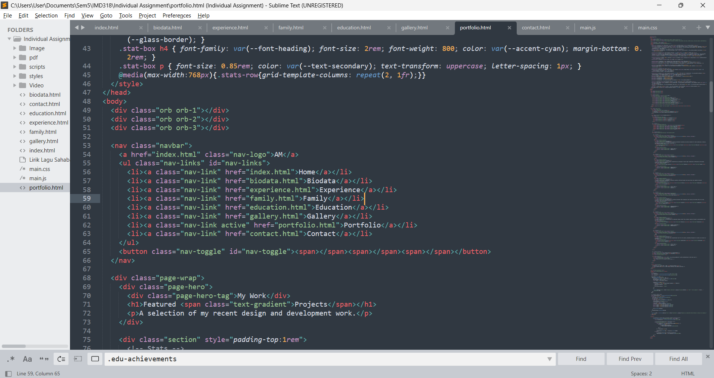

A selection of my recent video productions and web projects.
Videos
Websites
Projects
An engaging interview video captured at a car event, featuring insights from car enthusiasts and showcasing the vibrant automotive culture.
A step-by-step tutorial video guiding viewers on how to effectively manage, organize, and optimize their OneDrive storage for personal and professional use.
A heartwarming celebration video created for FELDA, capturing the spirit of Hari Raya Aidil Fitri with festive moments, community joy, and traditional values.

A modern, fully responsive personal portfolio website built with HTML, CSS, and JavaScript. Features smooth animations, dark mode, and a clean user interface.